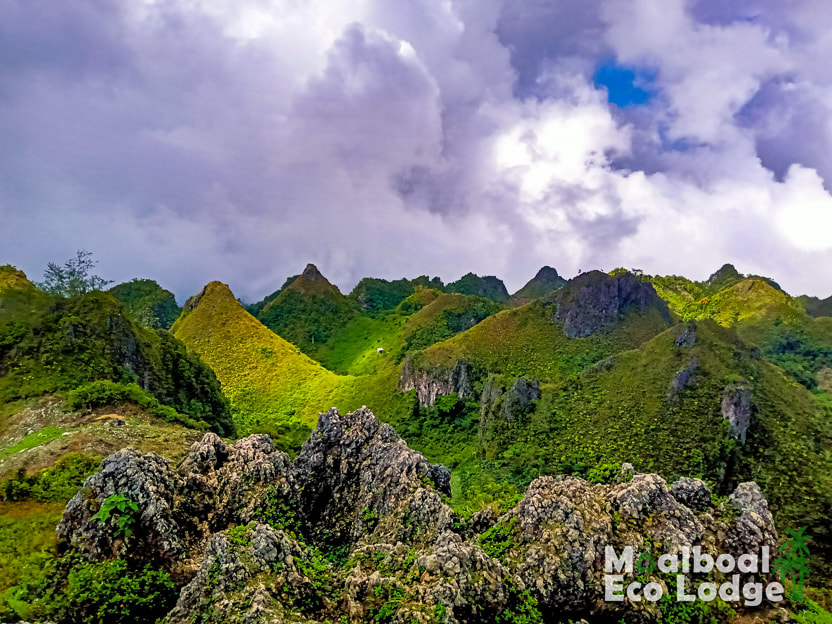
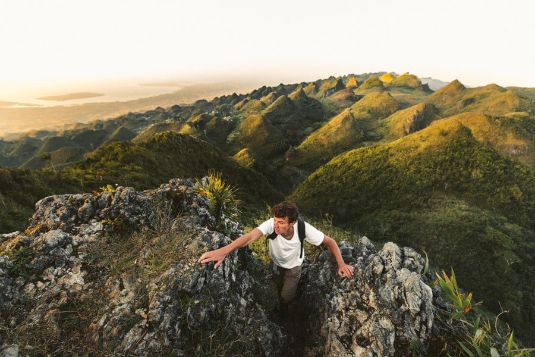
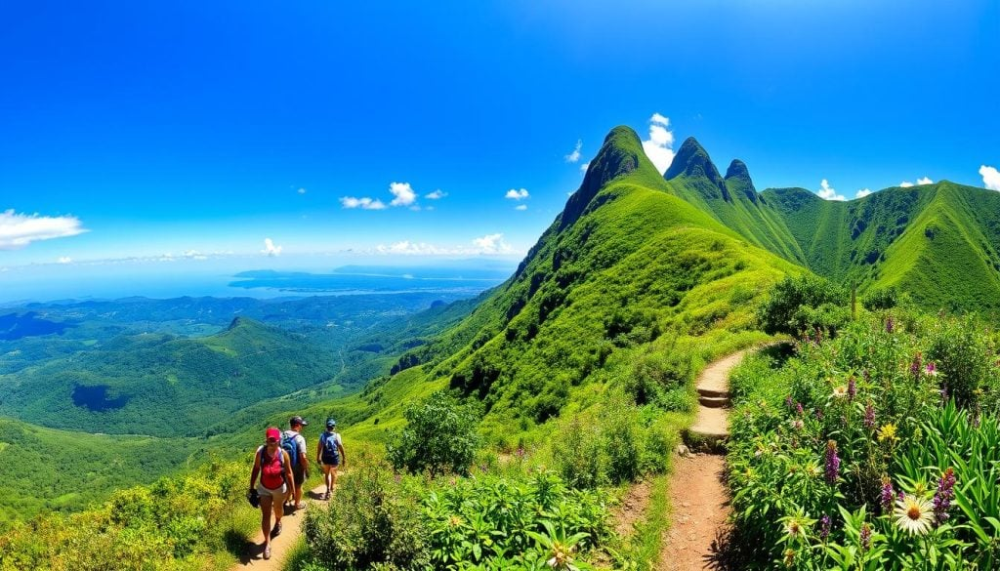
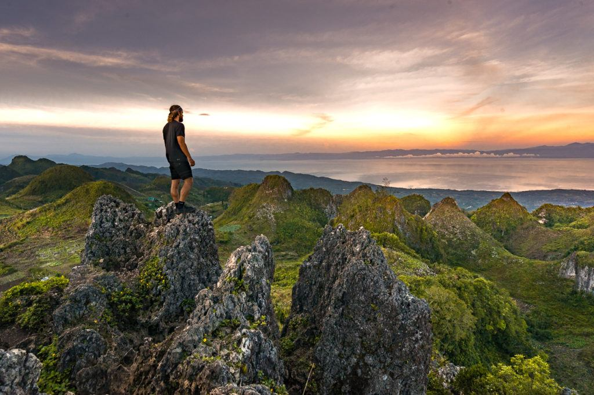
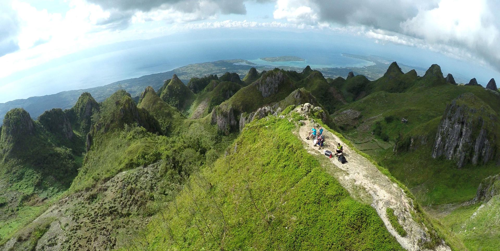

-
Trekking in Moalboal is a rewarding experience for both beginners and seasoned adventurers.
Immerse yourself in nature, enjoy thrilling activities, and create lasting memories in this
tropical paradise! 🌴
Location
- Moalboal, located on the west side of Cebu, offers breathtaking trekking experiences for adventure enthusiasts. The trekking trails typically wind through lush forests, scenic coastlines, and picturesque mountain ranges, making it a perfect destination for nature lovers.
Trekking in Moalboal often includes:
- Exploring dense forests with rich biodiversity
- Hiking up panoramic viewpoints for stunning ocean and island views
- Visiting the famous Kawasan Falls, a natural wonder with turquoise waters
- Discovering hidden caves tucked away in the mountains
- Swimming in natural spring pools along the way
Transportation:
- Private Transportation: Arrange a private van or car from Cebu City for a more comfortable ride.
- Bus Services: Public buses are available from Cebu South Bus Terminal to Moalboal for around 150 PHP.
- Motorbike Rentals: Once in Moalboal, rent a motorbike to access nearby trekking starting points.
Safety
- Wear proper trekking shoes for grip on slippery paths.
- Bring enough water to stay hydrated.
- Hire a local guide to ensure you stay on the trail and learn about the area.
- Avoid trekking during heavy rains due to slippery and potentially dangerous conditions.
- Inform someone of your trekking plans and estimated return time.
Guides
- Assistance in navigating trails
- Historical and cultural insights
- Photography services to capture your adventure
- Meals or snacks during the trek